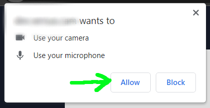

Welcome
This application will access your camera and complete a video test stream.
The full test will take a few minutes to complete.
⭐⭐⭐⭐
Please note, for best results:
Connect your computer to a wired connection, instead of Wi-Fi
Have no other applications open while running this test
If using a laptop, connect your laptop to a power outlet
🌠⭐⭐⭐
This first step will measure your network bandwidth
We will test against Cloudflare's speed test servers.
It will take a minute to complete once started.
🌠🌠⭐⭐
The next step will access your camera and microphone.
Accept the camera and microphone permissions if prompted.
No one will be able to see your video or audio, other than you.

🌠🌠🌠⭐
Video and stream quality check
Bitrate (kbps)
0
Buffer delay (ms)
0
Packet Loss (%)
0
Testing location: